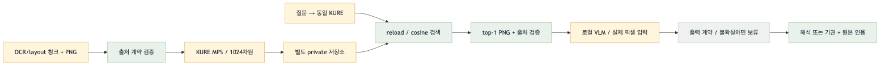
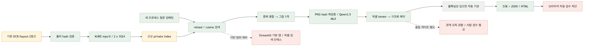

2026-09-08 · 별도 CLI의 이미지 입력·답변 경로 연결. 전체 corpus와 Streamlit 기본 앱은 미전환입니다. 연결 검증과 답변 정확성은 별개입니다.

목표 Mermaid 원본
현재 Mermaid 원본초록: 검증된 경로 · 노랑: 로컬 민감 자료 · 빨강: 차단/미연결 · 회색: 결정론 제어
| 항목 | 상태 | 다음 조치 | 점수 |
|---|---|---|---|
| OCR 임베딩·저장·reload·출처 반환 | 2청크 / 1그림 실측 완료 | 유지 | 0 |
| 검색 그림 → VLM 입력/답변 | 실제 픽셀 tensor 사용 확인 | Qwen3.5-9B-4bit / MLX GPU | 0 |
| 도식 관계 답변의 정확성 | 오독 관찰, 품질 미통과 | 불확실성 자동 기권 + 사람 검수 | 5 |
| 브라우저 이미지 표시 | 자동 검수 URL 정책 차단 | 사용자 private HTML 확인 | 5 |
| 전체 그림 검색 품질 | 미평가 | 대상·평가셋 승인 후 | 4 |
| Streamlit 기본 앱 연결 | 별도 범위 | 통합 승인 후 | 3 |
| 픽셀 검색 임베딩 / 사전 caption 인덱싱 | 별도 범위 | 필요성 평가 후 | 2 |
납품 확인 3 + 직접 사용자 확인 2. 후속 범위는 효과 0~3 + 검증 준비 0~2. 이 표는 후속 실행 승인이 아닙니다.
합성·기존 회귀 24개 PASS. KURE 1024차원, 실제 mps:0, CPU fallback 없음, OS 네트워크 차단 상태로 실행.
후속 VLM 회귀 39개 PASS. 실제 이미지 QA 4회: 마지막 라벨 읽기 응답과 불확실성 기권 확인. 마지막 VLM 단계 7.537초, peak MLX 약 7.06GB. 관계 해석 오독 사례는 품질 미통과로 유지합니다.
build 모델 로딩 4.668초 / 임베딩 0.812초. 새 프로세스 query 검색 0.454초(모델·인덱스 로딩 및 HTML 생성 제외). 원본 입력 hash 동일, 벡터와 원문은 Git 제외.
두 청크가 같은 그림이므로 검색 성공은 연결 확인일 뿐 Recall/nDCG 또는 정답 품질 증거가 아닙니다. 브라우저 자동 검수 및 screenshot은 BLOCKED로 기록합니다.
VLM에는 OCR 본문을 주지 않고 검증된 PNG 1장을 전달합니다. 모델 manifest 전수 SHA, Metal GPU, 입력 pixel shape, 실제 token 수를 확인합니다. 모델이 불확실성을 표시한 결과는 자동 기권합니다. 불확실성 미표시도 정답 보장은 아닙니다.